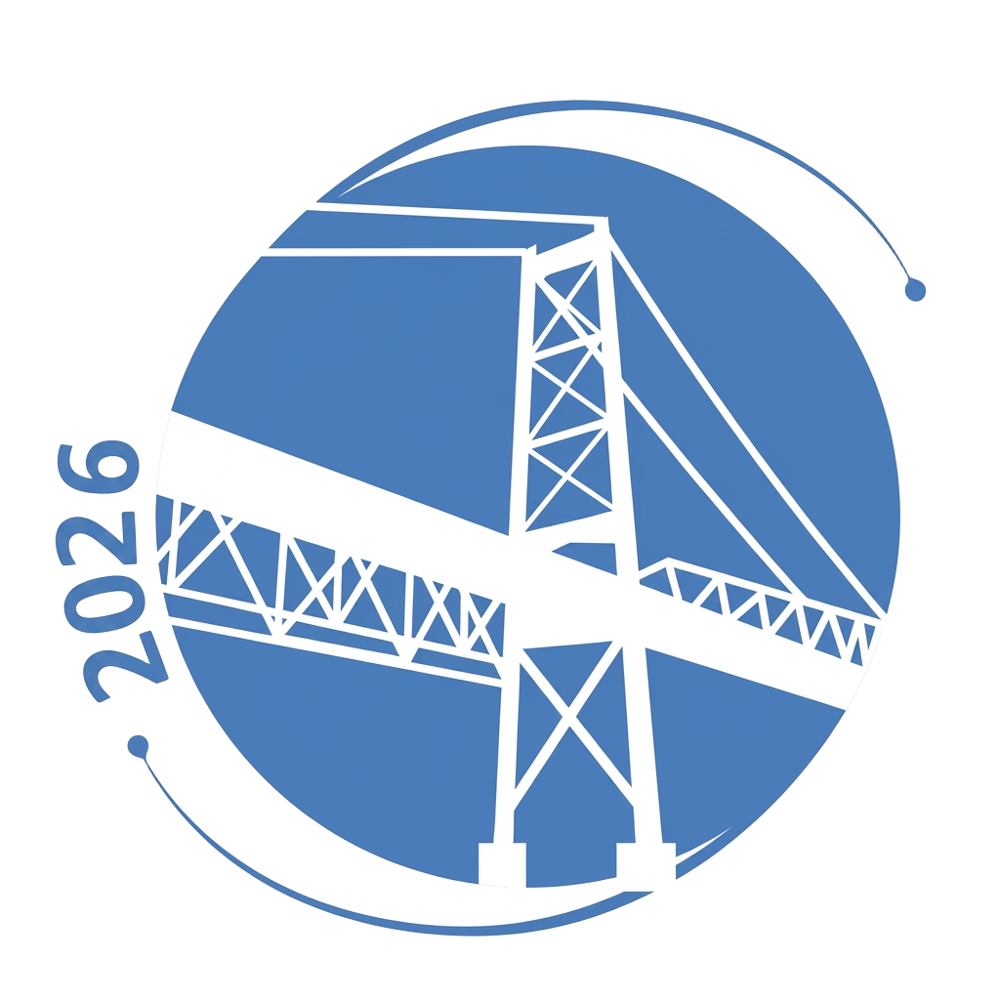
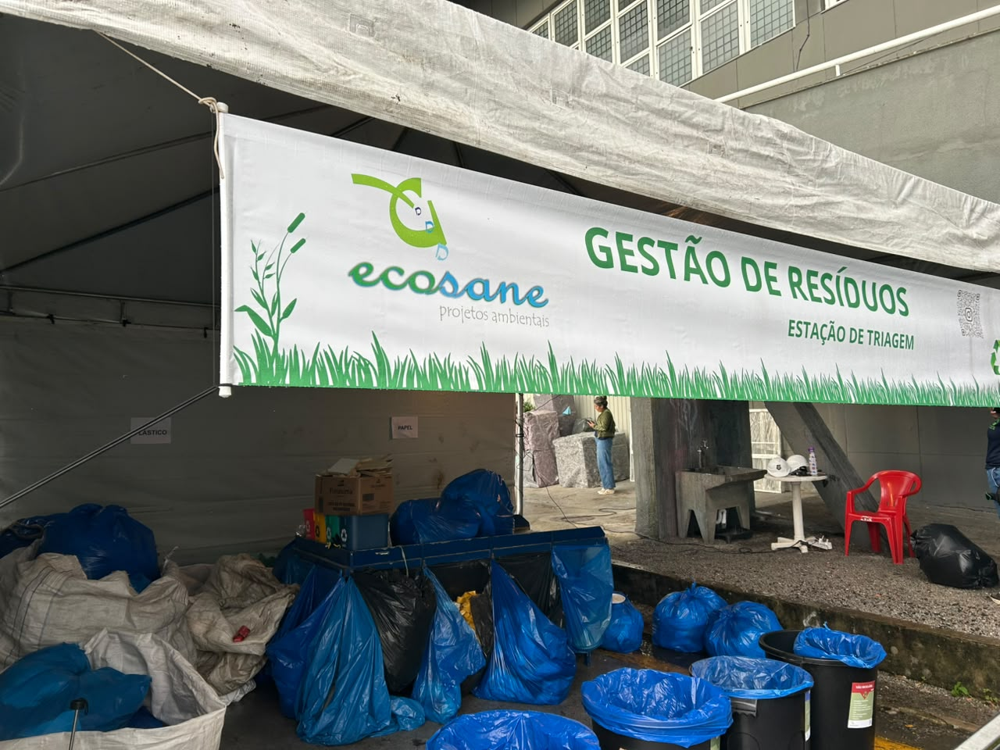
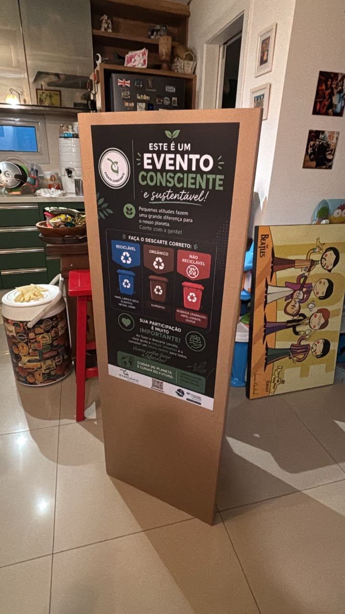
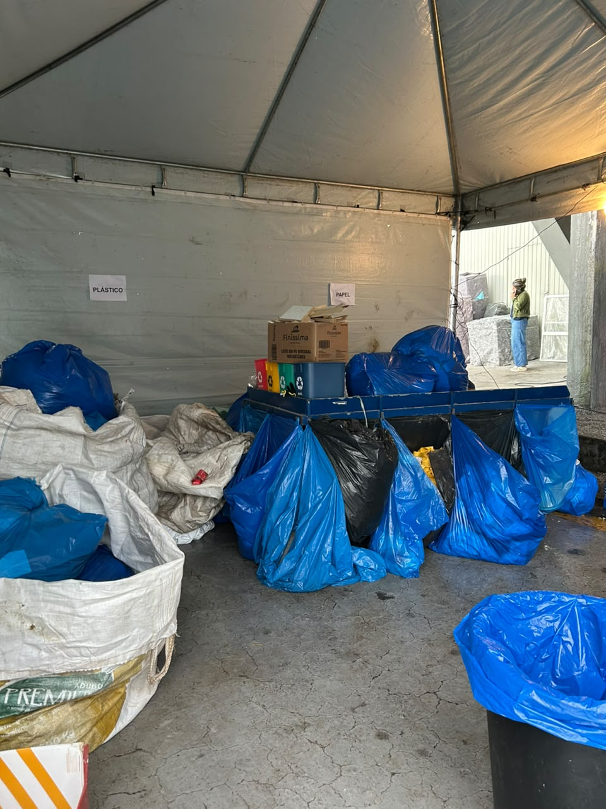
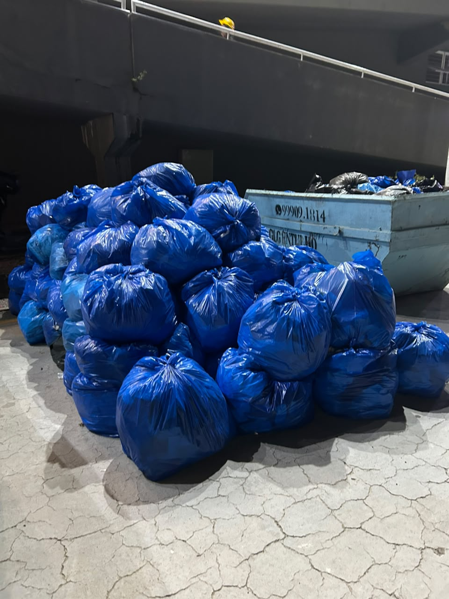
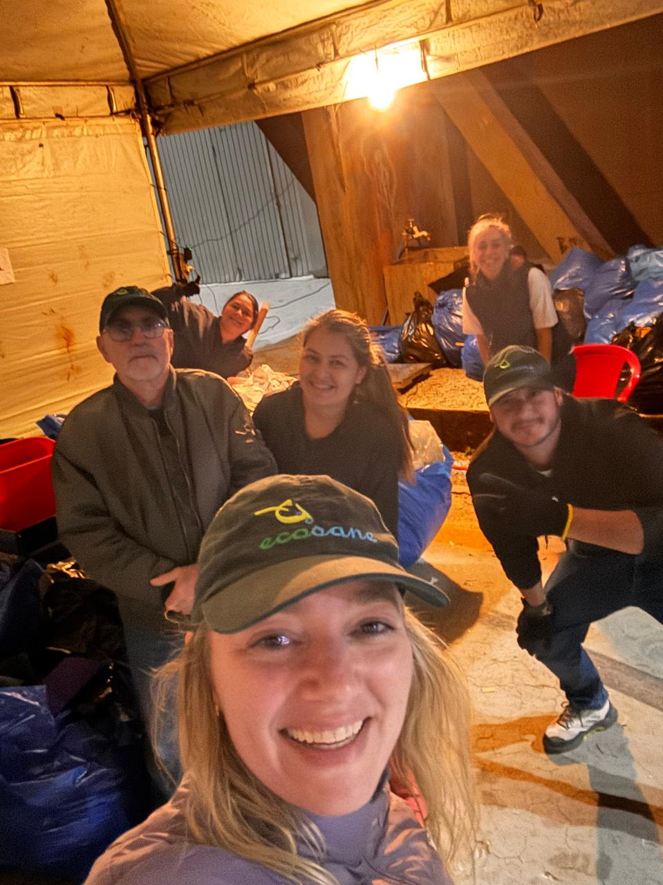
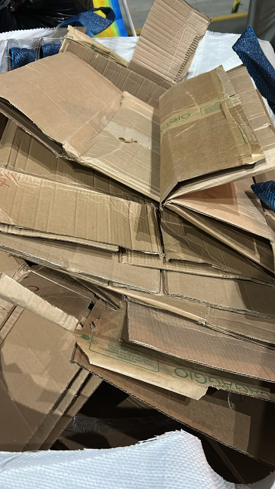
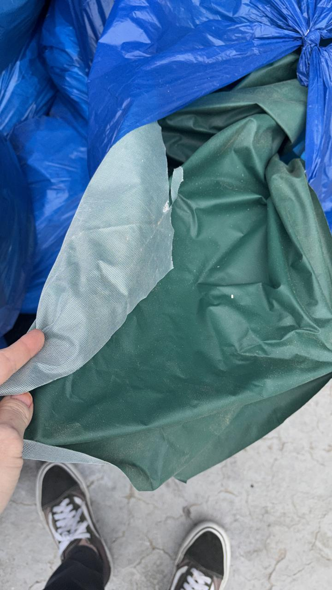

RELATÓRIO DE GESTÃO DE RESÍDUOS


Apresentação Institucional
O 58º Congresso Brasileiro de Patologia Clínica / Medicina Laboratorial, realizado de 15 a 18 de setembro de 2026, no CentroSul, em Florianópolis (SC), contou com uma estrutura de gestão de resíduos voltada à segregação, triagem, acondicionamento e destinação adequada dos materiais gerados durante as etapas de montagem, realização e desmontagem do evento.
A operação foi conduzida com foco na segregação na fonte, recuperação de materiais recicláveis, redução dos impactos ambientais e valorização social dos resíduos, envolvendo ações de orientação, coleta, triagem e encaminhamento dos materiais conforme suas características.
O presente relatório apresenta os resultados quantitativos da gestão de resíduos, sua distribuição por categoria e por etapa do evento, além dos principais indicadores ambientais e sociais obtidos.
Indicadores Principais
Resultados consolidados de geração, reciclagem, valor social e descarbonização.
Destinação dos Resíduos
Distribuição por categoria de destinação ambiental e socialmente responsável.
Distribuição por Etapa do Evento
Geração de resíduos registrada nas três fases do congresso.
A geração de resíduos foi registrada nas três principais etapas operacionais. A montagem concentrou 46,48% do volume total registrado, seguida pela realização do evento e pela desmontagem.
Caracterização dos Resíduos
Detalhamento ordenado de todas as 15 frações de materiais registrados durante a operação, com classificação por tipo.
| # | Material | Tipo | Massa (kg) | % do Total |
|---|---|---|---|---|
| 1 | Madeira | Reciclável | 1.823,13 | 21,11% |
| 2 | Rejeito | Rejeito | 1.494,61 | 17,31% |
| 3 | Bagum/PVC | Reciclável | 1.488,80 | 17,24% |
| 4 | WC | Rejeito | 1.104,92 | 12,79% |
| 5 | Misto | Rejeito | 824,71 | 9,55% |
| 6 | Papel/papelão | Reciclável | 799,69 | 9,26% |
| 7 | Plástico | Reciclável | 253,03 | 2,93% |
| 8 | Ferro | Reciclável | 248,00 | 2,87% |
| 9 | Compostável | Orgânico | 202,30 | 2,34% |
| 10 | Carpê | Reciclável | 198,87 | 2,30% |
| 11 | Vidro | Reciclável | 74,45 | 0,86% |
| 12 | Copinho | Reciclável | 52,15 | 0,60% |
| 13 | Metal | Reciclável | 36,30 | 0,42% |
| 14 | PET | Reciclável | 32,10 | 0,37% |
| 15 | Isopor | Reciclável | 4,95 | 0,06% |
| TOTAL | 8.638,01 | 100,00% | ||

Educação Ambiental
A comunicação visual instalada no evento reforçou as orientações para o descarte correto, apresentando categorias de resíduos e instruções de separação. A sinalização contribuiu para tornar a segregação mais clara aos participantes e às equipes envolvidas.
"ESTE É UM EVENTO CONSCIENTE e sustentável! Pequenas atitudes fazem uma grande diferença para o nosso planeta."
Estação de Triagem
A estação de triagem foi estruturada para receber os materiais coletados, organizar os resíduos por categoria e apoiar o encaminhamento adequado das diferentes frações.

Galeria Fotográfica da Operação
Documentação visual das etapas de segregação, triagem, armazenamento e atuação da equipe.




Equipe e Operação
A gestão dos resíduos contou com equipe dedicada à organização da coleta, segregação, triagem e acondicionamento dos materiais. O registro fotográfico evidencia a atuação conjunta da equipe durante a operação.
Análise Comparativa e Evolução Sustentável
Resultados Consolidados — 2026
Sumário oficial de todos os vetores de destinação e métricas socioambientais do congresso.
Recomendações para Futuras Edições
Diretrizes estratégicas elaboradas pela equipe técnica para otimização da gestão de resíduos.
Redução na Fonte
Priorizar materiais reutilizáveis e reduzir o uso de itens descartáveis nas etapas de montagem e desmontagem.
Planejamento da Montagem
Considerar que a montagem representou 46,48% do volume total registrado e avaliar previamente materiais de embalagem, estruturas e elementos temporários.
Segregação Eficiente
Manter e ampliar a sinalização dos pontos de descarte, reforçando a identificação visual clara de todas as categorias.
Materiais de Grande Volume
Avaliar estratégias específicas para madeira, Bagum/PVC, rejeitos e outros materiais com maior participação na massa total.
Monitoramento e Métricas
Manter a pesagem segregada por etapa e categoria para permitir análises comparativas sólidas entre futuras edições.
Conclusão
A gestão de resíduos do 58º Congresso Brasileiro de Patologia Clínica / Medicina Laboratorial 2026 resultou na contabilização de 8.638,01 kg de resíduos. A operação envolveu segregação, triagem e encaminhamento de diferentes materiais, com recuperação de recicláveis, destinação de matéria orgânica e registro de valor social e redução estimada de CO₂e.
Os resultados consolidados oferecem uma base objetiva para o acompanhamento e o aprimoramento da gestão de resíduos em futuras edições.